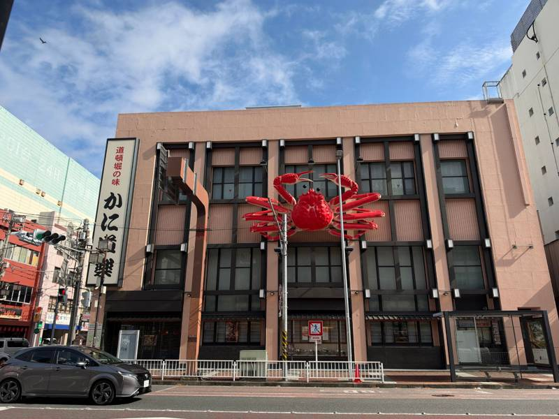
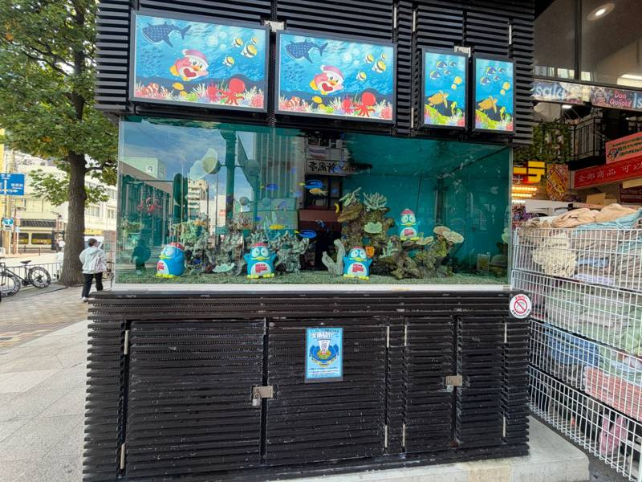
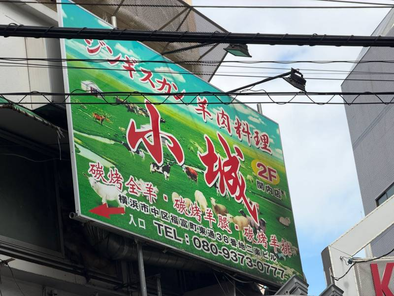

看板、サイン（店舗の看板）
撮影者：寺本 圭吾
撮影場所：横浜市中区（伊勢佐木町・関内周辺）
撮影日：2026年10月16日
写真1 かに道楽

カニが壁に張りついた看板。建物全体がカニの土台になっていて、お店の看板というより街のオブジェのよう。路上観察として面白い。
写真2 ドン・キホーテ伊勢佐木町店

店先の水槽の中に、看板と同じペンギンの置物が並んでいる。看板のキャラクターが店の外にも出てきていて、街の人が足を止める仕掛けになっていると思った。
写真3 小城（関内店）

異文化の看板として選んだ。羊肉料理のお店で、日本語の「ジンギスカン」と中国語の「碳烤羊腿」などが並び、草原の写真も使われている。日本の街に異文化が見える。
一覧に戻る